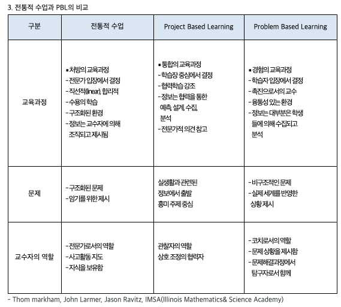

교육에 대한 새로운 시각 : 프로젝트 학습(PBL)
문제를 상정하고, 솔루션을 찾는 방식으로 공부하자

데이터사이언스 공부를 하면서도 그렇고, 점점 커가는 딸에게 어떻게 배움을 줘야 할까에 대해서도 고민하던 차에 비슷한 고민을 담은 보고서를 보게 되었다. 프로젝트 학습(Project-based learning)에 대해서 다룬 보고서였다. KDI에서 2016년에 이주호 전 교육부 장관 등이 참여해서 연구한 결과물이었다. 비슷한 시기에 유행하기 시작한 플립러닝과도 일맥상통하는 개념으로 보였다.
- 참고로 OECD에 따르면, 우리나라가 PBL 교육 수준이 제일 낮다고 한다.
개인적으로 코딩을 공부하면서 조금 느낀 것은 단순히 언어나 테크닉을 배우려고 하기보다 왜? 무엇을 위해서 배우는 것이 중요하다는 것이었다. 단순히 사회 분위기가 그러니 나도 해봐야지하면서 시작하는 것보다는 나에게 어떤 문제가 있는데 이것을 코딩으로 해결해 보고 싶다라는 관점으로 접근하는 것이 학습에 효과적일 수 있다는 생각이 들었다. 실제로 코딩을 공부하면서 잘 참고했던, 실리콘밸리 엔지니어의 영상에서도 같은 이야기를 해주었었다.
학습만을 위한 학습은 그 자체로 관념의 세상에 빠지기 쉽다. 학습을 위한 학습은 무엇을 배우고, 어디까지 배워고, 얼마나 깊이 배워야 할지에 대한 학습으로 귀결된다. 그런데, So what? 그렇게 배워서 무엇을 하고자 했던 것인가를 생각해 보면, 배움의 방향도 달라야 한다는 생각에 이른다. 우리 모두가 교육학자가 될 필요는 없다. 결국은 누군가가 내준 문제를 해결하기 위해서 공부하는 것보다 내가 해결하고픈 문제를 상정해 보고, 이를 스스로 해결해 나가는 과정에서 공부해 보는 것이 필요하다.
- 현재의 머신러닝과 같이 데이터 기반 인공지능 패러다임의 등장이 주는 함의도 유사하다고 생각된다.
- 계획보다 실행이 더 중요하다. 해보면서 배워야 한다.
- 다양한 분야를 overall(두루두루) 하게 아는 것보다 특정 분야를 outstanding(두드러지게) 하게 아는 것이 더 중요한 시대다.
- 결국 사람들이 찾는 사람은 특정 분야의 문제를 궁극적으로 해결해 줄 수 있는 사람이다.
이러한 관점이 학습에 효과적이라면 마찬가지로 딸에게도 효과적일 수 있다는 생각이 들었다. 교과서라는 지식들의 표준화된 나열을 참조는 하되, 끊임없이 스스로 학습 동기를 얻을 수 있으려면, 스스로 문제를 정의하고 그 해결책을 스스로 찾아보는 것이 도움이 될 수 있을 것이란 판단이다. 그리고 필요한 경우 자신이 직접 해결하기보다는 자기보다 더 잘 아는 친구나 선생님에게 필요한 부분에 대해서는 협력과 조언을 구할 수 있는 자세를 가르쳐주는 것이 좋을 것 같다는 생각이 들었다.
- 과거에 독서모임을 하면서 읽었던 책들 중에 초등학교 고학년이나 중학교 수학 공부를 하기 전에 읽었다면 좋았을 것 같던 책들이 있었는데, 다시 회상해 보면 바로 그러한 것들이 왜 이것을 배워야 하는지에 대한 동기부여를 해줄 수 있었기 때문이라고 생각된다.
- 단순히 좋은 점수를 얻어서, 좋은 학교에 진학하기 위해서가 아니라 어떤 문제를 해결하기 위해서 이 지식이 필요하다고 인식하게 해주는 것이 중요하다고 생각된다. 주변 시선이나 부모, 선생의 인정이나 칭찬이 아니라 본인 스스로가 궁금한 것이나 문제점을 인식하고 스스로 지식들을 찾아서 해결해 나갈 수 있도록 해주고 싶다. 지금처럼 소위 유튜브에서 어떤 지식이든 시각적으로 쉽게 이해할 수 있는 세상에서는 과거보다 더 쉽게 달성할 수 있을 것이라 생각된다.
지금까지도 그랬지만, 앞으로도 특정 분야에 특화된 지식을 기반으로 여타 분야나 사람들과 소통하여 엮는 것이 중요해질 것이라고 생각된다. 즉, 한 분야에서 흥미를 가지고 꾸준히 더 학습하여 스페셜리스트가 되는 것이 우선 필요하고, 그러한 자산을 바탕으로 다른 사람들과 소통과 협력을 통해서 큰 프로젝트를 이끌어 나갈 수 있는 것이 필요하다는 것이다.
아래는 나중에 참고해 보려고 프로젝트 학습에 대해서 간략히 정리해 본 것이다.
프로젝트 학습?
- 학생이 스스로 프로젝트를 제안하고, 그것을 해결하는 과정에서 다른 친구들과 협력하며 학습이 이뤄지는 교육 방법
- 기존 교육 방식과 비교(아래 참고, 출처: 박차용의 청소년활동)

- 기존 교육 방식과 비교(아래 참고, 출처: 박차용의 청소년활동)
프로젝트 학습은 4C 능력을 제고
- 소통(communication)
- 협업(collaboration)
- 비판적 사고(critical thinking)
- 창의성(creativity)
참고 문서
- 프로젝트 학습을 통한 교육개혁(1) - https://www.kdi.re.kr/research/subjects_view.jsp?pub_no=14768
- 프로젝트 학습을 통한 교육개혁(2) - https://www.kdi.re.kr/research/subjects_view.jsp?pub_no=15602
- PBL 경제교육 시리즈(KDI에서 만든 교사대상 교육교재) - https://eiec.kdi.re.kr/material/pblView.do?idx=1146
- Making Learning Meaningful through Project-Based Learning - https://www.oecd.org/education/research/2740151.pdf
)